《追色手记52》学习资料
Kai Böttcher：室内人像黄绿色调与 Lightroom 保姆级实操
视频标题 | 保姆级教程来了！这个冲上热门的摄影风格，手把手教会你｜追色手记52 |
作者 | 摄影师聿铭 |
时长 | 约 9 分 10 秒 |
来源 | https://www.bilibili.com/video/BV1EdWNz9EKo/ |
整理日期 | 2026-05-22 |
说明本文根据视频音频转写、画面截取与内容校对整理，保留学习所需的方法、步骤和关键截图，不包含逐字稿。
Kai Böttcher 作品参考截图
以下为视频中展示的 Kai Böttcher 作品和分析画面截图，用来观察人像主题、标准曝光、室内光线、颗粒感和黄绿色调。它们是视频截图，可能保留字幕、界面或讲解标注。
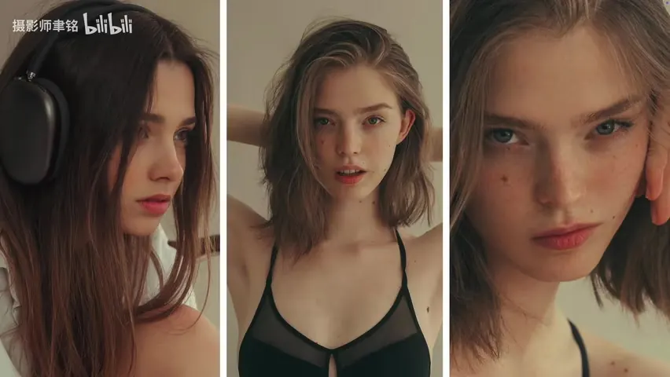 人像拼图：风格入口 |
代表作品：直视镜头 |
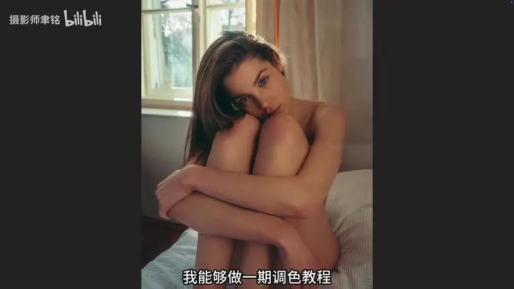 柔和室内人像 | 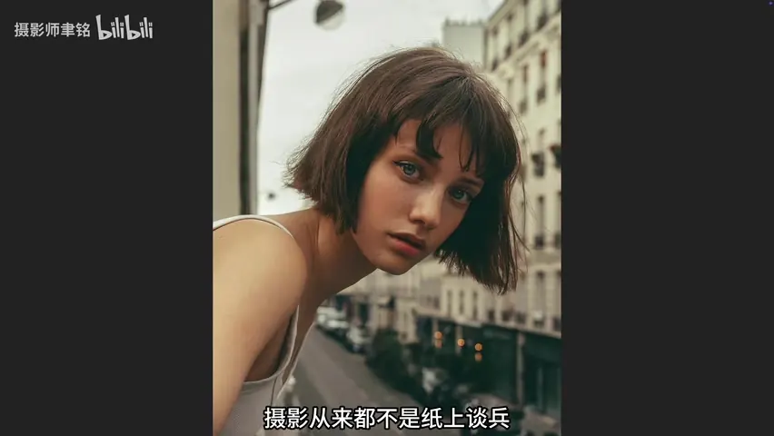 户外人像：主题延展 |
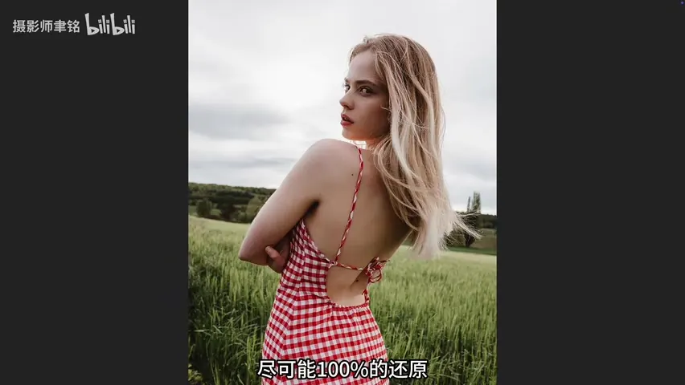 柔光窗边氛围 | 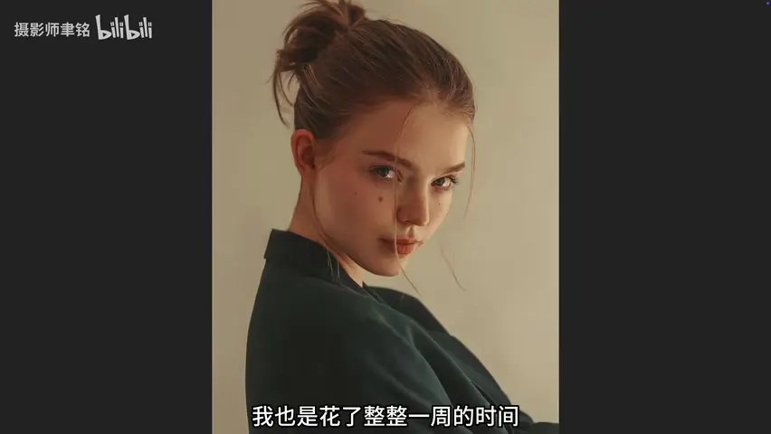 室内可控光 |
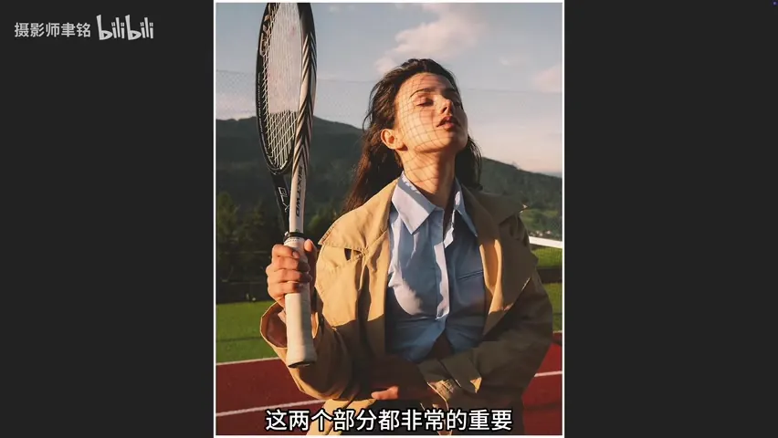 运动题材人像 | 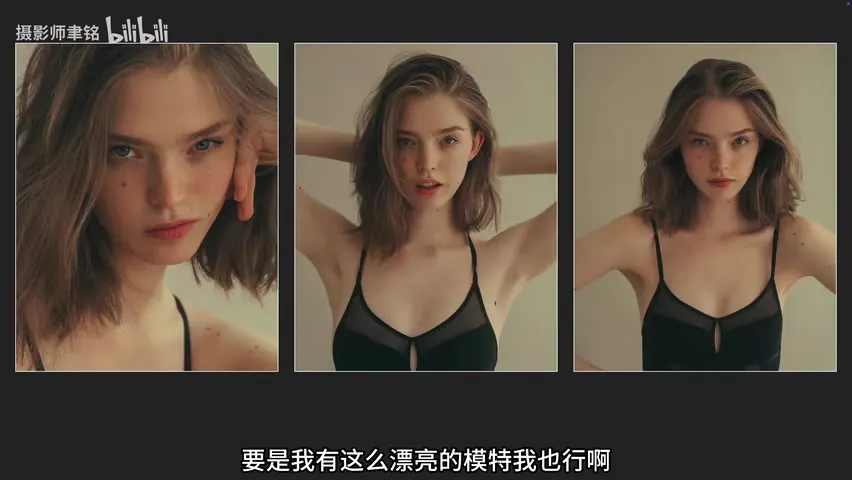 女性人像主题 |
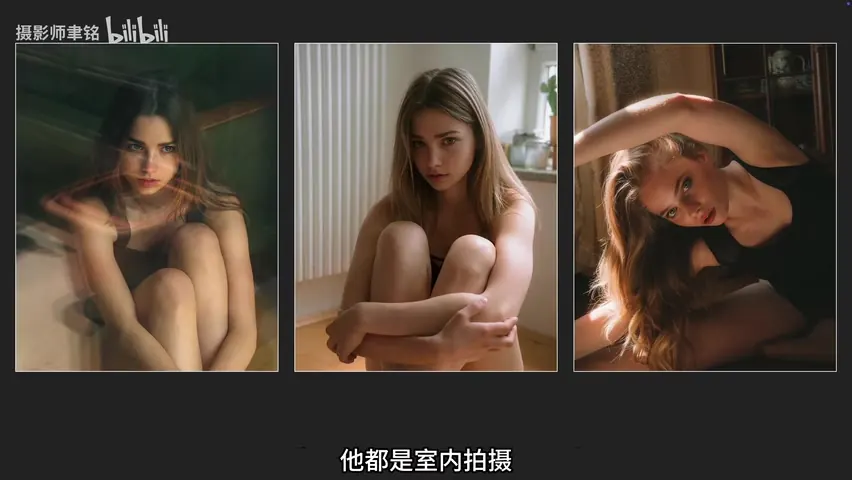 室内场景示例 | 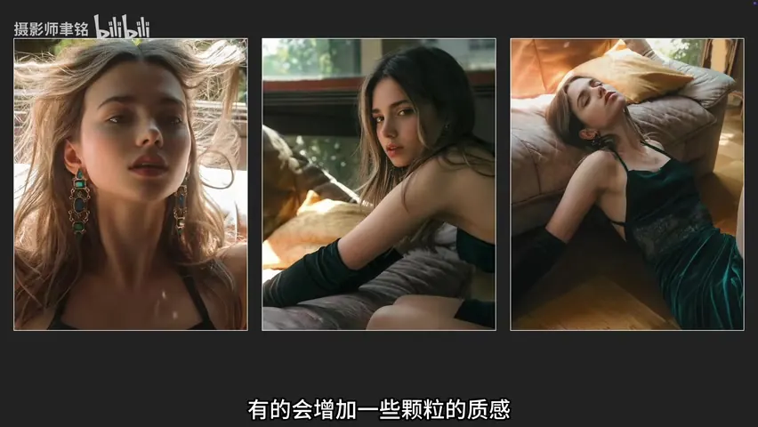 颗粒与杂志质感 |
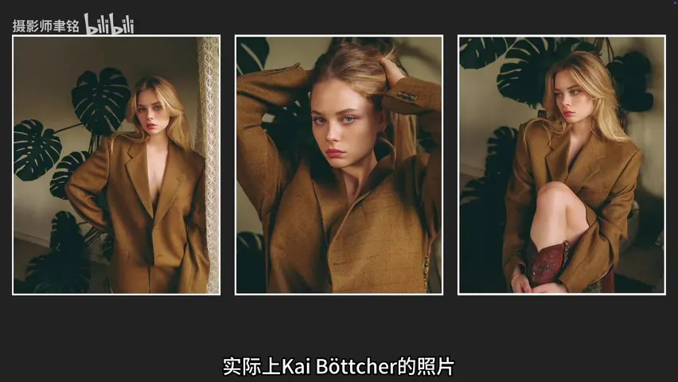 黄绿色调样本 | 
风格总结：主题/影调/色调 |
一页速览
风格核心 | Kai Böttcher 风格以高颜值女性人像、室内可控光、均匀曝光、轻颗粒质感和黄绿色调为核心。 |
主题特点 | 主要拍摄女性人像，模特好看是优势，但风格成立仍依赖姿态、光线、构图和后期，不是“有好看模特就行”。 |
影调特点 | 整体以标准曝光为主，不像日系小清新那样偏亮，也不像欧美电影感那样偏暗；曝光均匀、舒服，部分照片有颗粒和时尚杂志质感。 |
色调重点 | 最直观是画面带一点黄绿色。关键反直觉：阴影不是加绿，高光也不是加黄；实际是阴影轻微偏黄，高光反而偏绿。 |
实操顺序 | 裁剪贴近参考 -> 曝光/阴影/黑色上提 -> 高光略压、白色略提 -> 色温偏暖 -> 清晰度降低、鲜艳度/饱和度提高 -> 曲线抬黑提人物 -> RGB 曲线微调 -> HSL 红橙 -> 颜色分级黄/绿 -> 校准绿原色色相右移。 |
学习目标
能用主题、影调、色调三层框架拆解 Kai Böttcher 风格。
理解室内可控光为什么让画面更容易达到标准曝光和舒服影调。
掌握黄绿色调的真正方向：阴影和中间调偏黄，高光偏绿。
能用 RGB 曲线给画面轻微偏色，而不是用单一滑块把颜色推到夸张。
能用颜色分级和校准配合，把偏绿高光处理得更自然。
核心方法：三层拆解
维度 | 观察重点 | 本片结论 |
主题 | 人像类型、人物比例、场景。 | 女性人像为主，颜值和表现力强，但成片味道来自光线、姿态、构图和后期共同作用。 |
影调 | 曝光是否偏亮/偏暗、是否有颗粒。 | 标准曝光、室内光线可控，整体均匀舒服；部分作品有颗粒和时尚杂志质感。 |
色调 | 黄绿效果来自哪里。 | 阴影轻微偏黄，高光偏绿；这点和直觉相反，是本片调色的核心。 |
Lightroom 实操流程
裁剪与参考先裁剪，让人物在画面中占据更大比例，也方便与参考图统一比例；打开参考视图，把 Kai 的照片放在左边。
基础提亮素材偏暗，先提高曝光，让人物脸部可见；再提亮阴影和黑色色阶，让背景暗部不再一片漆黑。
亮部与白平衡高光略微压暗，白色色阶略微提亮，让靠窗位置保留光感；色温往右偏暖，因为参考图有黄绿色氛围。
柔化与浓郁降低清晰度，利用窗边光影制造一点朦胧美；鲜艳度和饱和度都提高，让氛围更突出。
明度曲线最左端上抬，让暗部不死黑、有哑光灰质感；阴影压回，避免全图发灰；中间调和高光上提，让人物不陷入黑暗。
红色曲线参考图偏绿，红色曲线往下就是偏绿，因此整体轻微往下压。幅度必须小，否则偏色会过重。
绿色曲线绿色曲线也整体轻微往下压，让画面往暖色倾向靠近。
蓝色曲线把中间调往上提，增加一点蓝色，用来综合前面偏暖的倾向。
HSL 红橙红色主要是嘴唇：色相往橙、饱和降低、明亮度提高。橙色主要是环境氛围色：色相略往左、饱和降低、明亮度略提。
颜色分级阴影加入偏黄绿的倾向并降低明亮度；中间调加入黄色并提亮；高光加入绿色并略降明亮度。
混合、平衡与校准混合和平衡往右，让画面偏向高光绿色；如果绿色显得怪，就在校准中把绿原色色相往右拉，减弱偏绿问题并让画面更自然。
工具速查表
工具 | 用途 | 本片操作 | 注意点 |
裁剪 | 贴近参考图与人物比例 | 人物占比更大，统一画幅。 | 比例先接近，后期对照才有意义。 |
基础面板 | 恢复标准曝光 | 曝光、阴影、黑色上提；高光略压，白色略提。 | Kai 风格不是极暗，也不是过曝高亮。 |
清晰度/色彩 | 柔化并增强氛围 | 清晰度降低，鲜艳度和饱和度提高。 | 降低清晰度适合柔光人像，过度会糊。 |
明度曲线 | 暗部哑光、人像提亮 | 抬黑、压阴影、提中间调和高光。 | 既要不死黑，也要防止全图灰。 |
RGB 曲线 | 微调偏色结构 | 红曲线下压偏绿，绿曲线下压偏暖，蓝曲线中间调上提。 | 幅度一定要轻，RGB 曲线容易过偏。 |
HSL | 处理嘴唇和氛围暖色 | 红往橙、降饱和、提亮；橙略调、降饱和、提亮。 | 画面颜色少，HSL 不需要大范围乱动。 |
颜色分级 | 塑造黄绿色调 | 阴影黄绿、中间调黄色、高光绿色。 | 这一步是核心，但不能让绿色脏。 |
校准 | 让高光绿色自然 | 绿原色色相往右。 | 当颜色分级的绿太怪时，用校准消化它。 |
关键截图与讲解
图 01 | 00:03 | Kai Böttcher 风格引入。
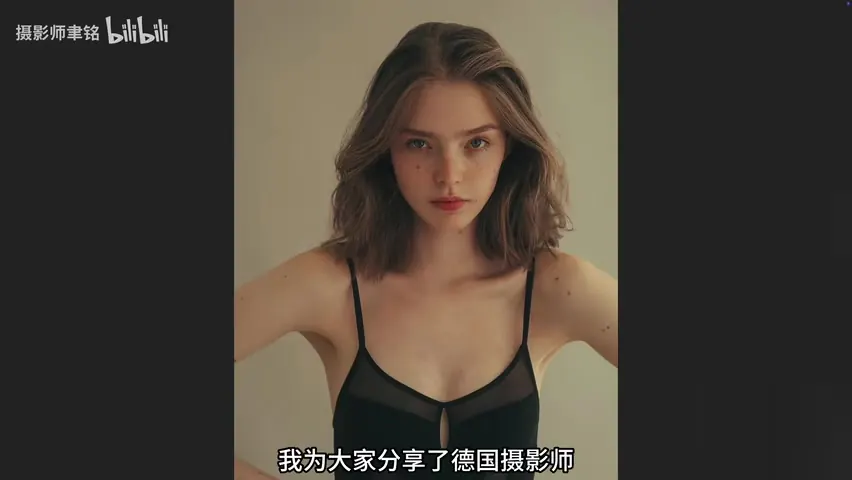
学习要点本期是对热门风格的调色教程。
图 02 | 00:49 | 教程结构：思路拆解 + 实操演练。
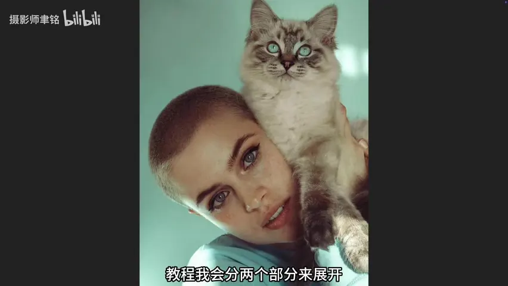
学习要点先理解风格，再进入滑块，才不容易调错方向。
图 03 | 01:06 | 主题、影调、色调。
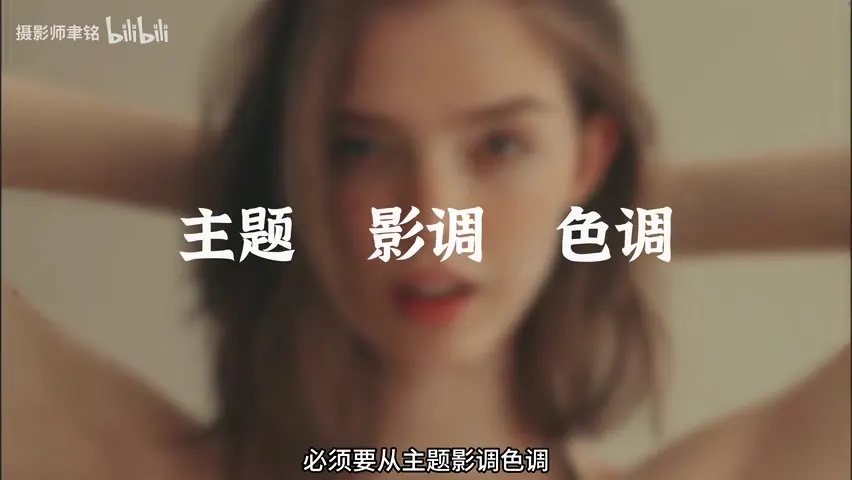
学习要点模仿摄影师风格必须从这三项入手。
图 04 | 01:20 | 主题：女性人像为主。
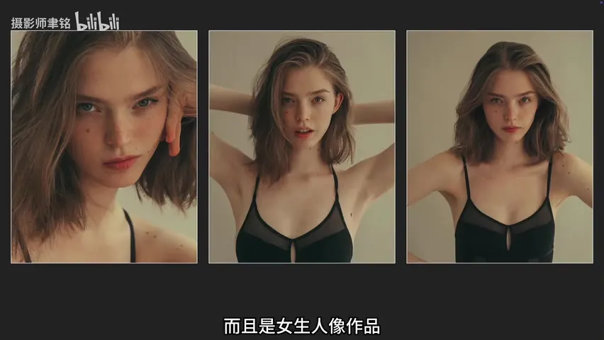
学习要点模特好看是优势，但不是风格全部。
图 05 | 01:32 | 好模特不等于好照片。
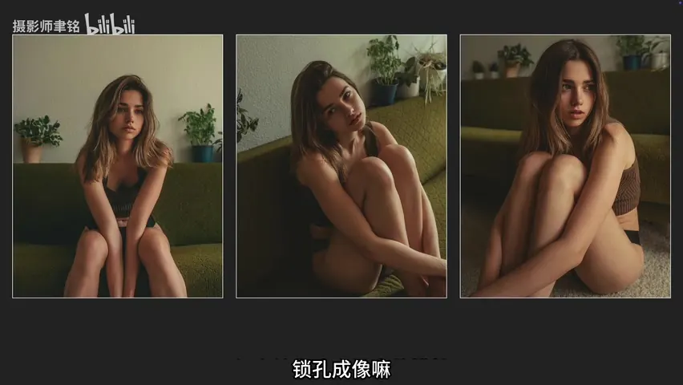
学习要点真正的味道还要靠光线、姿态、构图和后期。
图 06 | 02:06 | 室内标准曝光。
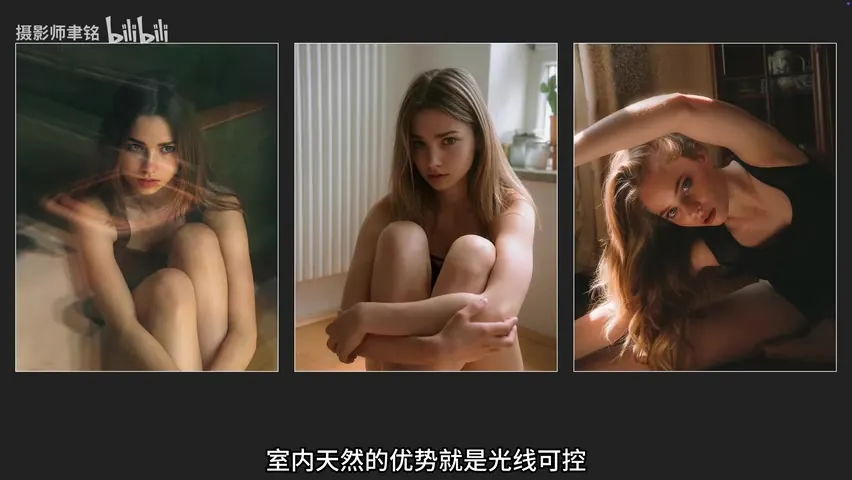
学习要点可控光让画面曝光均匀、舒服。
图 07 | 02:24 | 颗粒与时尚杂志质感。
学习要点部分作品通过颗粒形成轻微胶片/杂志封面感。
图 08 | 02:44 | 黄绿色调是明显特点。
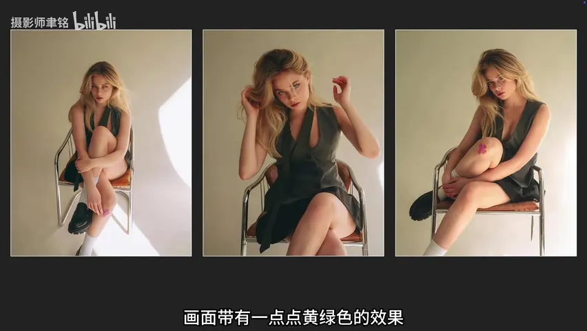
学习要点这是 Kai 风格最直观的色彩识别点。
图 09 | 02:56 | 阴影偏黄，高光偏绿。
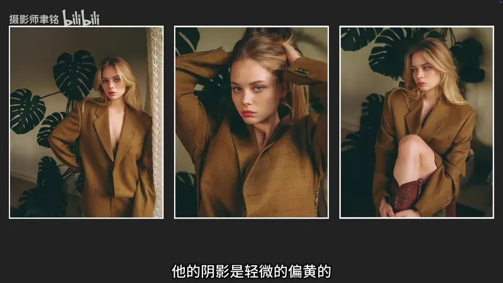
学习要点本片最重要的反直觉结论。
图 10 | 03:25 | 裁剪与参考视图。
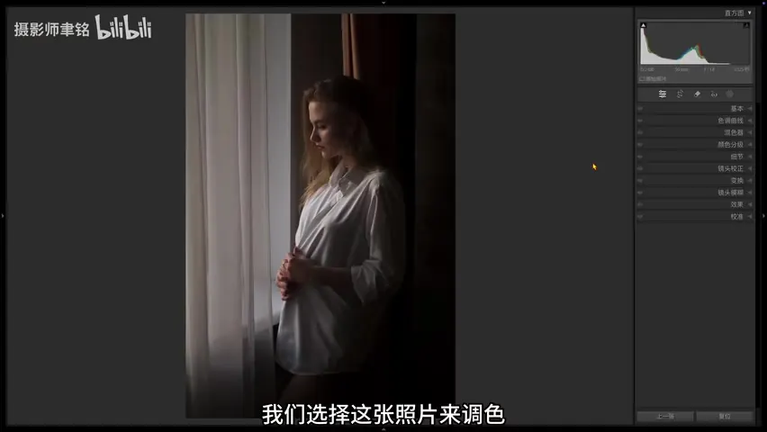
学习要点人物占比更大，也便于和参考图统一比例。
图 11 | 03:42 | 曝光、阴影、黑色上提。
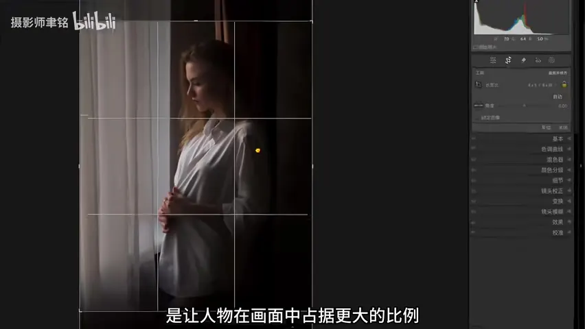
学习要点先让人物脸部和暗背景有可读信息。
图 12 | 04:04 | 高光、白色、色温。
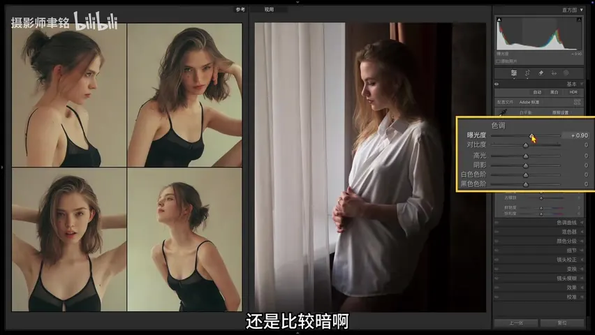
学习要点保留窗边光感，同时把色温往暖调推进。
图 13 | 04:34 | 清晰度降低，颜色增强。
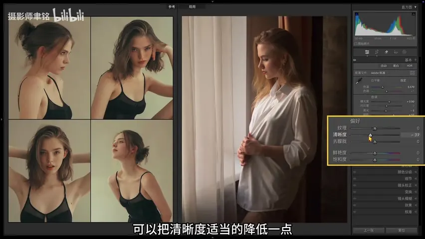
学习要点朦胧美和浓郁氛围同时建立。
图 14 | 04:58 | 明度曲线抬黑。
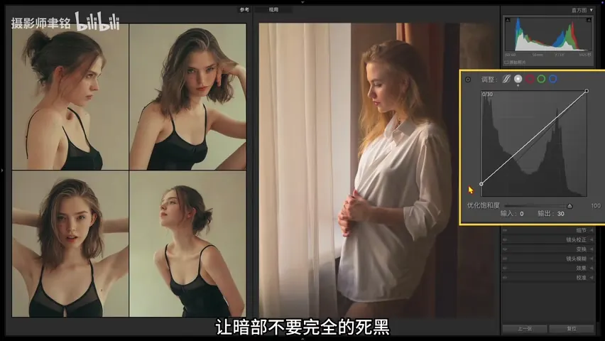
学习要点暗部不死黑，出现哑光灰质感。
图 15 | 05:12 | 中间调和高光上提。
学习要点让人物身上的光线更明显。
图 16 | 05:30 | 红色曲线下压。
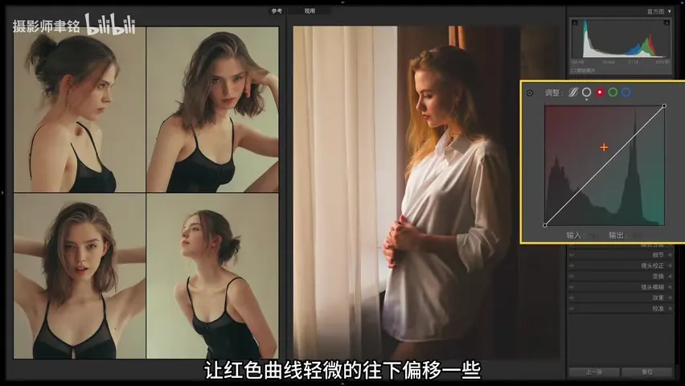
学习要点让画面轻微偏绿，幅度要小。
图 17 | 05:52 | 绿色曲线下压。
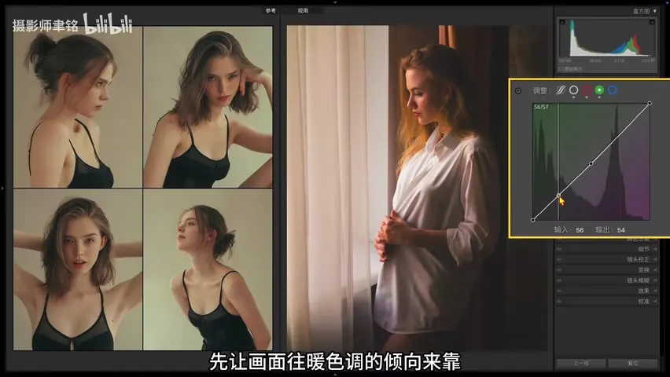
学习要点让画面往暖色调靠。
图 18 | 06:04 | 蓝色曲线中间调上提。
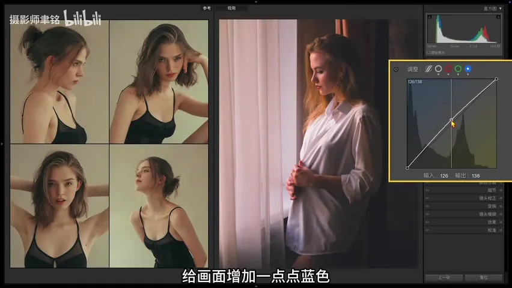
学习要点补一点蓝，平衡过暖倾向。
图 19 | 06:22 | HSL 红色：嘴唇。
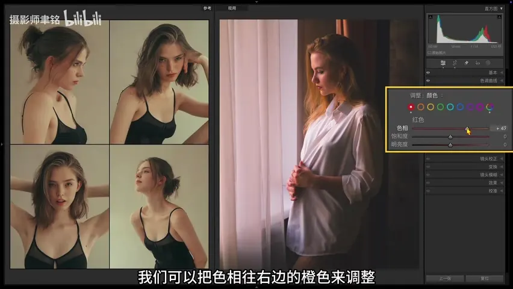
学习要点红往橙、降饱和、提亮。
图 20 | 06:45 | HSL 橙色：氛围色。
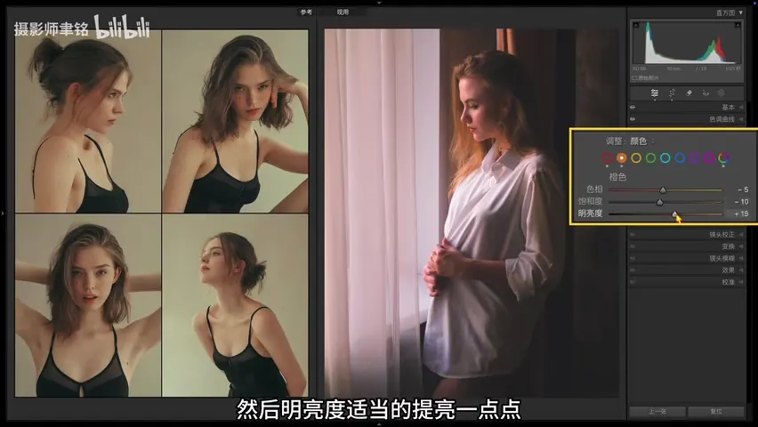
学习要点色相略调、降饱和、提亮，让色彩更克制。
图 21 | 07:05 | 颜色分级：阴影黄绿。
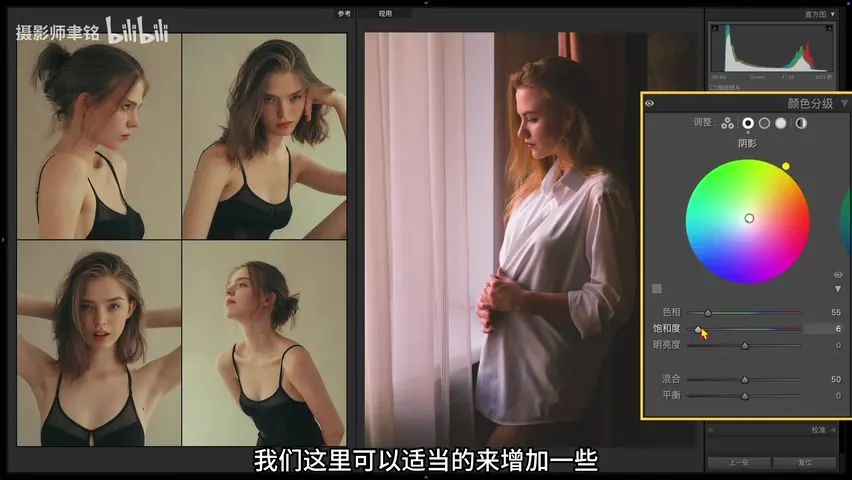
学习要点阴影加入黄绿倾向并降低明亮度，让暗部更实。
图 22 | 07:21 | 颜色分级：中间调黄色。
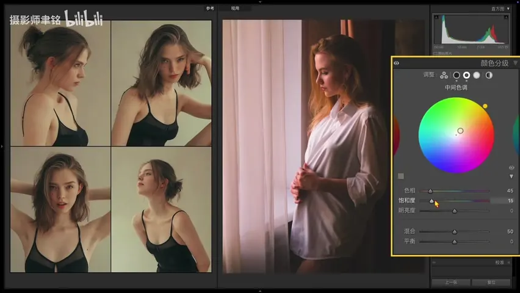
学习要点中间调作用在人和靠窗区域，提亮更明显。
图 23 | 07:38 | 颜色分级：高光绿色。
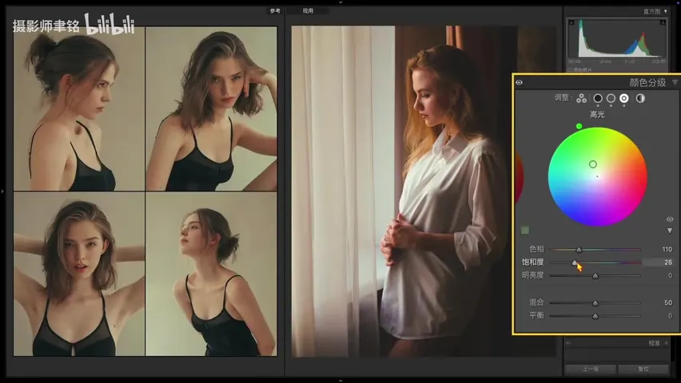
学习要点高光背景偏绿，是靠近参考图的关键。
图 24 | 07:50 | 混合和平衡往右。
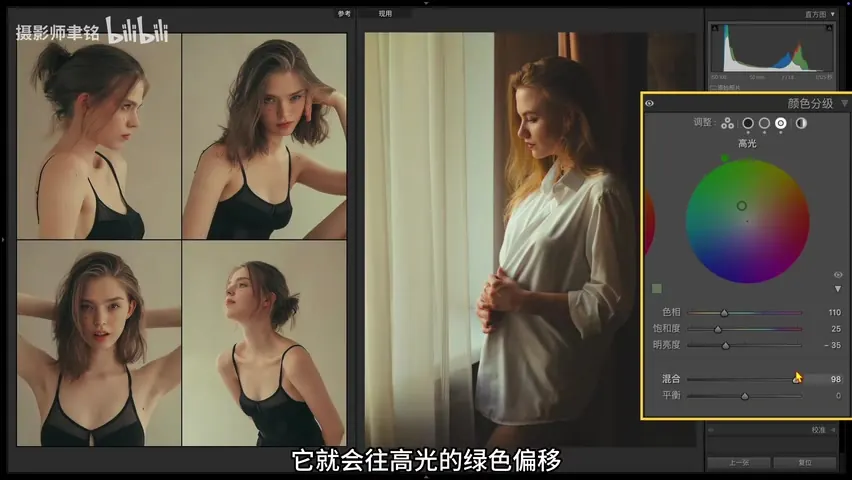
学习要点让画面更偏向高光绿色。
图 25 | 08:12 | 校准：绿原色色相右移。
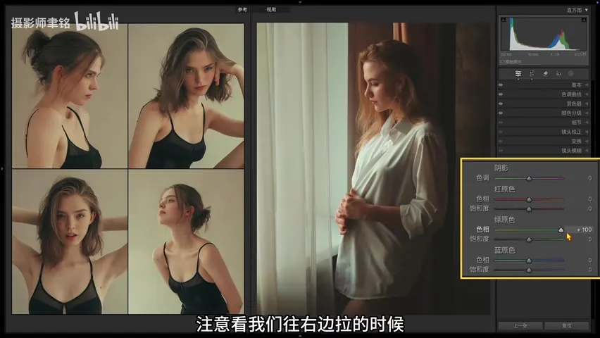
学习要点当绿色太怪时，用校准让偏绿更自然。
图 26 | 08:38 | 最终前后对比。
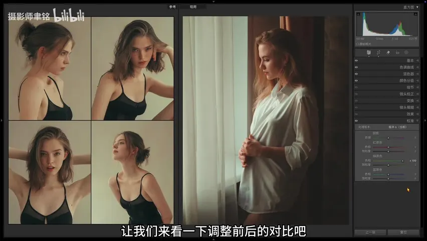
学习要点黄绿色调、标准曝光和杂志感共同完成。
练习任务
选择一张室内或窗边人像，光线要相对可控，人物脸部不能完全死黑。
先裁剪到更接近参考图的人物比例，再打开参考视图对照。
用基础面板建立标准曝光脸部清楚、暗背景有细节、窗边有光感。
用曲线抬黑、提中间调和高光，再用 RGB 曲线轻微处理偏绿/偏暖/偏蓝关系。
用颜色分级完成阴影黄绿、中间调黄、高光绿，再通过混合和平衡偏向高光绿。
如果绿色不自然，回到校准调绿原色色相，而不是继续在颜色分级里硬推。
复盘清单
检查项 | 通过标准 |
主题 | 人像表现力强，姿态和神态有时尚感。 |
曝光 | 整体标准、均匀，不明显过亮或过暗。 |
暗部 | 不死黑，有一点哑光灰，但不脏不塌。 |
高光 | 靠窗/背景高光有光感，并带轻微绿色倾向。 |
黄绿 | 整体有黄绿色气质，但看起来不是简单染色。 |
曲线 | RGB 曲线偏色幅度小，肤色仍然自然。 |
颗粒感 | 有轻微杂志/胶片质感，不影响皮肤和眼睛细节。 |
整体 | 风格接近参考图，同时素材本身仍然合理。 |
时间轴速查
时间 | 模块 | 重点 |
00:01-00:55 | 课程引入 | 说明教程分为思路拆解和实操演练。 |
01:02-01:18 | 方法框架 | 主题、影调、色调三方面分析。 |
01:18-02:00 | 主题 | 女性人像为主，但不是只有模特好看。 |
02:00-02:32 | 影调 | 室内可控光、标准曝光、颗粒与杂志感。 |
02:32-03:05 | 色调 | 黄绿色调；阴影偏黄，高光偏绿。 |
03:20-04:50 | 基础面板 | 裁剪、参考视图、提曝光/阴影/黑色、压高光、白色略提、色温暖、清晰度降、色彩增强。 |
04:50-06:15 | 曲线 | 明度曲线与 RGB 曲线微调偏色。 |
06:15-06:55 | HSL | 处理红色嘴唇和橙色氛围。 |
06:55-08:05 | 颜色分级 | 阴影黄绿、中间调黄、高光绿，混合和平衡偏右。 |
08:05-08:40 | 校准与对比 | 绿原色色相右移，让偏绿更自然并查看前后对比。 |
全部图片
本页共保留 38 张来自 Word 的图片。上方正文中已按文档顺序展示，这里作为总览索引。